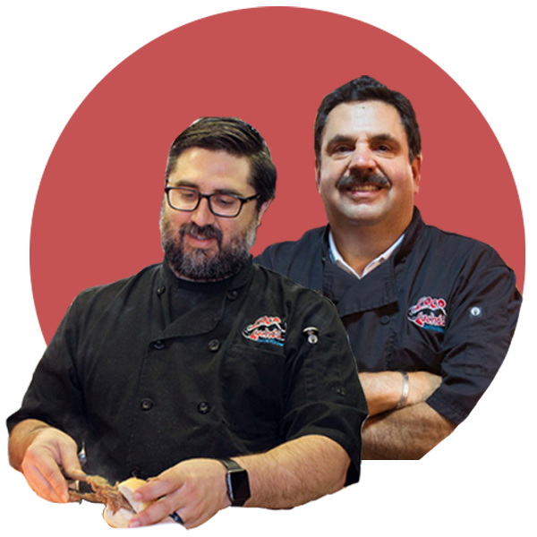

Reading Terminal Market is a marketplace in Center City Philadelphia. The market has over 80 vendors that sell clothing, home decor, and most notably, food. The food at Reading Terminal is well known throughout the city and brings in visitors from all over the country. There are over 10 types of cuisine represented in the market, four of which are featured on this website.